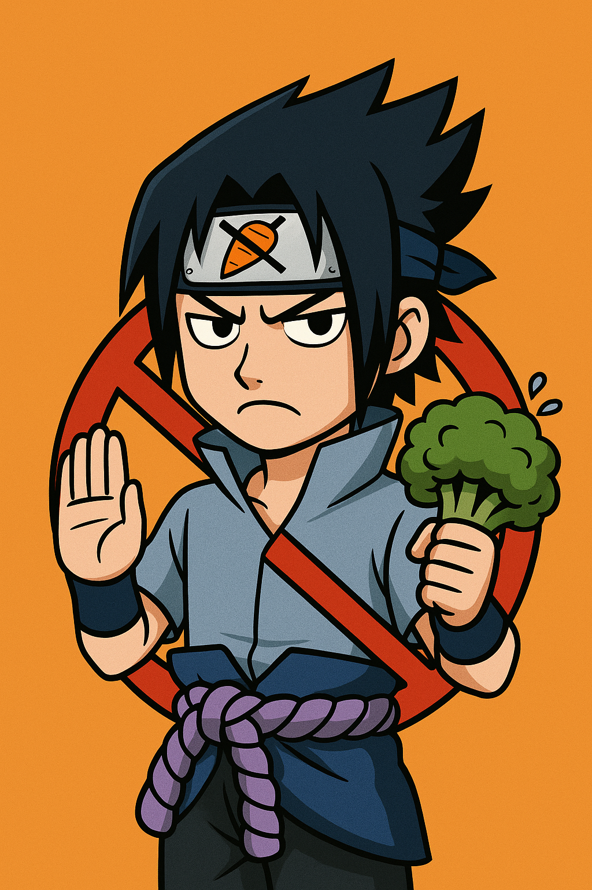

Qui suis-je ?
Baka Sishuis est né d’un traumatisme collectif : une ratatouille de trop.
Depuis, nous avons décidé de dire NON aux légumes, OUI au fromage fondu, à la viande bien cuite, aux sauces crémeuses et aux plats qui ne nécessitent aucun épluchage.
Notre mission
- Défendre le droit de manger un hot-dog sans cornichon.
- Éduquer les foules sur les dangers psychologiques du céleri.
- Créer un monde où la salade est toujours optionnelle (et oubliée).
Notre mascotte officielle

“Ne me parlez pas de tofu.” — Sasuke, ninja intraitable sur la consommation de légumes.
Fun Fact
Le nom "Baka Sishuis" ne veut rien dire. Mais c’est plus drôle que "CourgetteLibre.fr".